透過這些技巧可以在開發程式的時候少打一些字，讓整個開發體驗更為順暢，一個好的 IDE 就應該能夠支援這樣的功能，讓開發人員的想法快速變成程式碼，這些技巧都是 Rider 提供的教學中提到的，如果有空的話直接開啟教學專案來自己嘗試一下應該是比較有效率的
Prefix Templates
null 判斷式
於變數後方打.
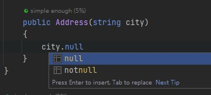
選擇null或是notnull
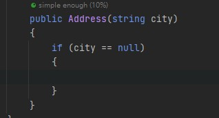
迭代集合
於變數後方打.
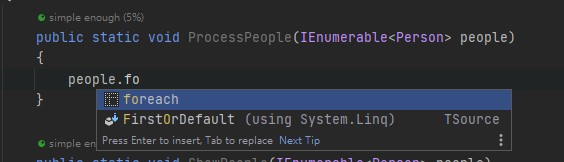
輸入foreach的過程中，看到已經有提示，就可以按下Enter或是Tab
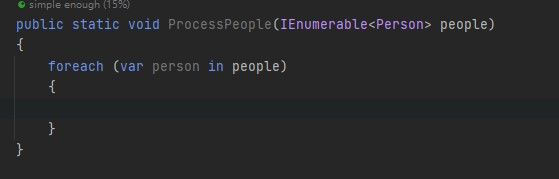
Surround Templates
如果你有一段程式碼，想要放到if或是using區塊內，就可以利用Surround Templates做到這件事情
加入判斷式 if
選取要包起來的程式碼區塊
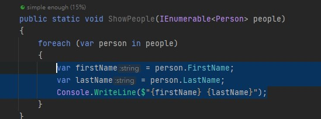
輸入if會出現template
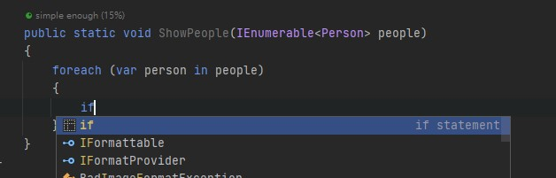
按下Enter或是Tab
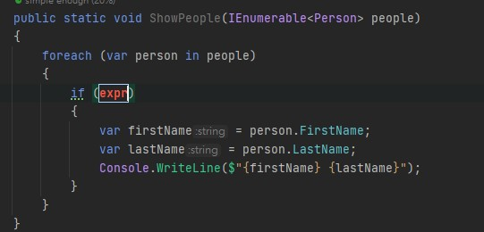
再將判斷式完成即可
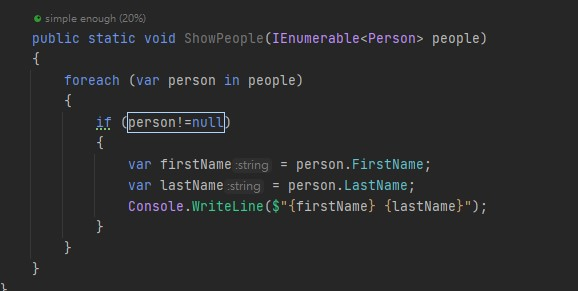
Statement body assist
其實就是幫忙把=>這種寫法改回原先的get寫法
將游標放在=>的地方
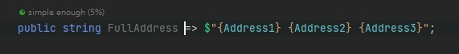
按下{即可
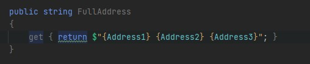
Smart behaviour of dot and semicolon
這個功能不起眼，但真的真的超級好用，讓你可以很順暢地一路打程式碼，而不用去計較現在應該要先往前一格還是往後一格，透過下面的範例就知道了
一開始我們將變數打出來，等等對它操作
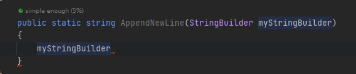
先打.，然後AppendLine，注意此時的游標是在括號中
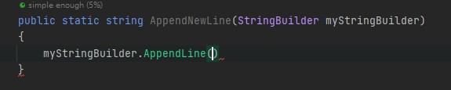
後面還想要操作，於是又打了.，注意 Rider 的 Focus 自動幫你放在括號外面了
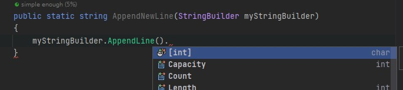
接著再打ToString並自動完成它，此時游標一樣在括號中
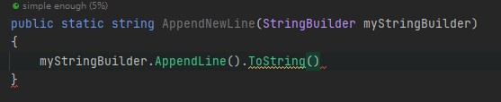
接著打;結束，Rider 又自動幫忙把分號放在括號外面了
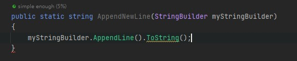
但是我們還需要將結果回傳，於是又輸入了.，Rider 再次自動變更游標位置到括號外面
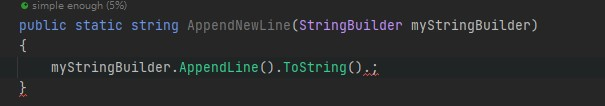
輸入return之後可以看到有一個template可用，選擇它
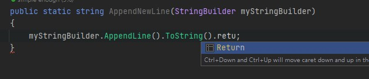
最終成果
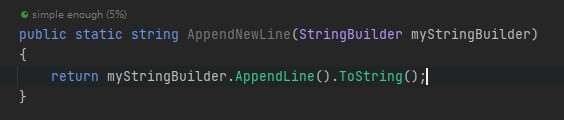
摺疊代碼
參考 Rider 提供的說明，列出來摺疊代碼相關的快速鍵
如果手都不想要碰滑鼠，搭配 Vim 外掛應該會很好用，大概就記得Ctrl+Alt++，跟Ctrl+Alt+-就好了，如果會需要用到階層的快捷鍵，我其實會考慮用大綱來看，但因為我沒有用Vim，都會用滑鼠，所以可能其他的快捷鍵會很有用吧